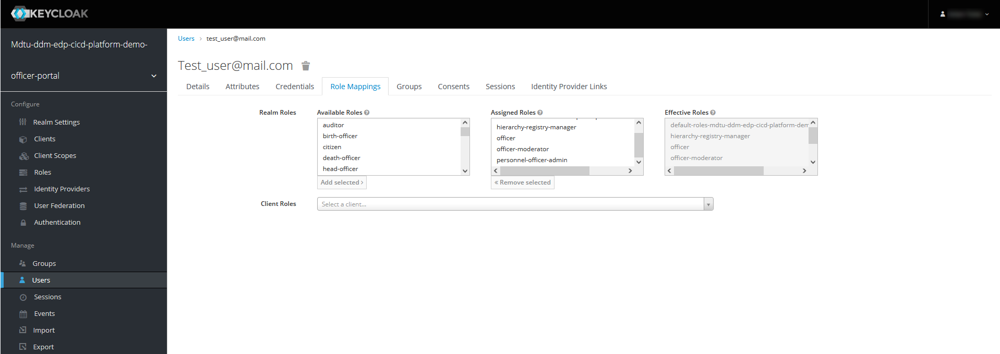

Ієрархічна модель
1. Загальний опис
Платформа реєстрів надає можливість побудувати ієрархічну модель доступу до об’єктів даних відповідно до рівнів ієрархічної структури та ролей користувачів. Це дозволяє забезпечити контроль над доступом до об’єктів на основі їх ієрархічного положення та ролі користувача.
У цій ієрархічній моделі кожен підрозділ має унікальний код — structure_code, який ідентифікує його в рамках системи. Крім того, використовується сурогатний ключ — hierarchy_code, який формується шляхом конкатенації коду підрозділу та коду кожного батьківського рівня в ієрархії. Наприклад, 101.202.303 — сурогатний ключ для доступу до об’єктів підрозділу третього рівня в ієрархії.
Приналежність користувача до вузла ієрархії визначається за допомогою атрибута hierarchy_code у системі управління користувачами Keycloak. Цей атрибут має збігатися із сурогатним ключем для підрозділу у БД реєстру та використовується для належного призначення ролей та обмежень доступу користувача до відповідних рівнів ієрархії.
Важливо зазначити, що hierarchy_code є обов’язковим атрибутом посадової особи у системі Keycloak, якщо така особа має виконувати функції в межах ієрархічної структури. Це дозволяє точно визначити приналежність та обмеження доступу для кожної посадової особи.
|
Присвоєння атрибута ієрархії користувачам у Keycloak може бути здійснено безпосередньо в інтерфейсі самого сервісу або шляхом імпорту даних з CSV-файлу.
Для ефективного керування та виконання завдань в рамках ієрархічної структури та управління персоналом, що працює за такою моделлю, передбачено декілька ролей:
-
hierarchy-registry-manager— керівник реєстру (посадова особа), відповідальна за керування ієрархічною структурою реєстру. -
hierarchy-registry-user— користувач реєстру (посадова особа), яка має доступ до ієрархічної структури та може виконувати завдання відповідно до своїх повноважень. -
personnel-officer-admin— кадровик, посадова особа, відповідальна за управління персоналом, включаючи призначення та зміну ролей інших посадових осіб в межах своїх повноважень. -
officer-moderator— модератор процесу автореєстрації посадових осіб у реєстрі, відповідальний за перевірку та схвалення запитів на реєстрацію нових користувачів.
Ці ролі допомагають забезпечити ефективну роботу та контроль над ієрархічною структурою реєстру, а також управління персоналом, забезпечуючи належну організацію та доступ до даних.
2. План дій з використання ієрархічної моделі у реєстрі
Скористайтеся наступним планом дій для налаштування та використання ієрархічної моделі у реєстрі:
-
Використовуйте референтні приклади моделювання регламенту. Для цього розгорніть власний демо-реєстр.
-
Як розгорнути демо-реєстр та отримати референтні приклади моделювання регламенту, дивіться на сторінці Розгортання демо-реєстру із референтними прикладами.
-
Приклади референтної моделі даних, бізнес-процесів та UI-форм доступні у файлах регламенту за відповідними назвами із префіксом
reference-або у теках reference, якщо є декілька згрупованих прикладів моделювання.
-
-
Створіть RLS-правила для доступу до даних за ієрархічною моделлю
3. Побудова ієрархічної структури
-
Продумайте та створіть ієрархічну структуру, що складається з декількох рівнів (вузлів). Назвемо їх підрозділами.
-
Призначте кожному такому підрозділу власний унікальний код ієрархії —
structure_code.Референтний приклад ієрархічної структури підрозділів
Таблиця 1. Зіставлення structure_code з hierarchy_code
Назва підрозділу Код підрозділу (structure_code) Сурогатний ключ (hierarchy_code) Примітка Міністерство економіки України
101
101
Кореневий вузол ієрархії
Державна служба експортного контролю України
201
101.201
Державне агентство резерву України
202
101.202
Державна служба України з питань праці
203
101.203
Департамент з питань праці
301
101.203.301
Департамент нагляду у промисловості та на об’єктах підвищеної небезпеки
302
101.203.302
Міністерство цифрової трансформації України
102
102
Кореневий вузол ієрархії
Державний центр інформаційних ресурсів України
204
102.204
Державне підприємство «Дія»
205
102.205
Міністерство внутрішніх справ України
103
103
Кореневий вузол ієрархії
Національна поліція України
206
103.206
Адміністрація Державної прикордонної служби України
207
103.207
Державна міграційна служба України
208
103.208
Управління пунктами тимчасового перебування іноземців
303
103.208.303
Управління пунктами тимчасового розміщення біженців
304
103.208.304
Державна служба України з надзвичайних ситуацій
209
103.209
Міністерство розвитку громад територій та інфраструктури України
104
104
Кореневий вузол ієрархії
Державне агентство розвитку туризму України
210
104.210
Державне агентство з енергоефективності та енергозбереження України
211
104.211
Державна авіаційна служба України
212
104.212
Державна служба морського і внутрішнього водного транспорту та судноплавства України
213
104.213
Державна служба України з безпеки на транспорті
214
104.214
Державне агентство відновлення та розвитку інфраструктури України
215
104.215
Департамент відновлення інфраструктури України
305
104.215.305
Департамент розвитку інфраструктури України
306
104.215.306
Управління розвитку інфраструктури України
401
104.215.306.401
4. Створення моделі даних
-
Продумайте та створіть логічну модель даних для своєї ієрархічної структури. Ми пропонуємо як приклад наступну структуру таблиць:
Зображення 1. ERD-діаграма логічної моделі на базі референтної структуриПояснення до структури таблиць референтної ієрархічної моделі
-
Таблиця
officers— містить інформацію про посадових осіб, їх ролі, ідентифікаційні дані та приналежність до певних підрозділів:-
officers_id: унікальний ідентифікатор посадової особи (типUUID). -
user_name: ім’я користувача в Keycloak (типTEXT). -
full_name: ПІБ користувача (типTEXT). -
drfo: РНОКПП користувача (типTEXT). -
edrpou: ЄДРПОУ користувача (типTEXT). -
realm_roles: перелік регламентних ролей користувача (типTEXT). -
work_start_date: дата прийняття на роботу (типDATE). -
unit_name: назва підрозділу згідно з ієрархією (типTEXT). -
hierarchy_code: сурогатний ключ, складений на основіstructure_codeшляхом конкатенації (типTEXT). -
structure_code: унікальний код ієрархії для відповідного підрозділу (типTEXT). -
selfregistration_decision: рішення модератора щодо самореєстрації (типBOOLEAN).
-
-
Таблиця
unit— містить інформацію про підрозділи:-
id: унікальний ідентифікатор підрозділу (типUUID). -
unit_name: назва підрозділу згідно з ієрархією (типVARCHAR(255)). -
structure_code: унікальний код ієрархії для відповідного підрозділу (типVARCHAR(255)). -
hierarchy_code: сурогатнийй ключ, складений на основіstructure_code(типVARCHAR(255)).
-
-
Таблиця
document_registration— містить інформацію про документи, асоційовані з певним підрозділом (unit):-
id: унікальний ідентифікатор документа (тип UUID). -
name: назва документа (тип TEXT). -
unit_id: зв’язок із підрозділом, до якого належить документ. Це відповідає ідентифікатору в таблиціunit(типUUID).
-
Зауважте, що всі UUID-поля використовують функцію
uuid_generate_v4()для створення унікальних значень за замовчуванням. -
-
Створіть фізичну модель даних на основі вашої логічної моделі.
Приклад 1. Фізична модель даних для ієрархічної структури підрозділів у реєстріТаблиця officers
<changeSet author="registry owner" id="table officers"> <createTable tableName="officers" ext:historyFlag="true" remarks="Перелік посадових осіб"> <column name="officers_id" type="UUID" defaultValueComputed="uuid_generate_v4()"> <constraints nullable="false" primaryKey="true" primaryKeyName="pk_officers_id"/> </column> <column name="user_name" type="TEXT" remarks="username користувача в Keycloak"> <constraints nullable="false"/> </column> <column name="full_name" type="TEXT" remarks="ПІБ користувача"> <constraints nullable="false"/> </column> <column name="drfo" type="TEXT" remarks="РНОКПП користувача"> <constraints nullable="false"/> </column> <column name="edrpou" type="TEXT" remarks="ЄДРПОУ користувача"> <constraints nullable="false"/> </column> <column name="realm_roles" type="TEXT" remarks="Перелік регламентних ролей користувача"/> <column name="work_start_date" type="DATE" remarks="Дата прийняття на роботу"/> <column name="unit_name" type="TEXT" remarks="Назва підрозділу згідно ієрархії"/> <column name="hierarchy_code" type="TEXT" remarks="Сурогатний ключ, складеній на основі structure_code"/> <column name="structure_code" type="TEXT" remarks="Унікальний код ієрархії для відповідного підрозділу"/> <column name="selfregistration_decision" type="BOOLEAN" remarks="Рішення модератора щодо самореєстрації"/> </createTable> </changeSet>Таблиця unit
<changeSet id="24569-1" author="ek"> <comment>CREATE TABLE unit</comment> <createTable tableName="unit" ext:historyFlag="true"> <column name="id" type="UUID" defaultValueComputed="uuid_generate_v4()"> <constraints nullable="false" primaryKey="true" primaryKeyName="pk_unit_id"/> </column> <column name="unit_name" type="VARCHAR(255)" remarks="Назва підрозділу згідно ієрархії"> <constraints nullable="false"/> </column> <column name="structure_code" type="VARCHAR(255)" remarks="Код ієрархії для відповідного підрозділу"> <constraints nullable="false" unique="true"/> </column> <column name="hierarchy_code" type="VARCHAR(255)" remarks="Сурогатний ключ, складений на основі structure_code"> <constraints nullable="false" unique="true"/> </column> </createTable> </changeSet>Таблиця document_registration
<changeSet id="24569-2" author="ek"> <comment>CREATE TABLE document_registration</comment> <createTable tableName="document_registration" ext:historyFlag="true"> <column name="id" type="UUID" defaultValueComputed="uuid_generate_v4()"> <constraints nullable="false" primaryKey="true" primaryKeyName="pk_document_registration_id"/> </column> <column name="name" type="TEXT" remarks="Назва документа"> <constraints nullable="false"/> </column> <column name="unit_id" type="UUID"> <constraints nullable="false" foreignKeyName="fk_document_registration_unit_id" referencedTableName="unit" referencedColumnNames="id"/> </column> </createTable> </changeSet>-
При створенні нової структури, таблиця з організаційною структурою може бути створена одразу при розгортанні регламенту, але мінімум один "батьківський" вузол в ієрархії повинен бути створений.
-
При створенні заявки, до неї автоматично додається код ієрархії - сурогатний ключ ініціатора БП.
-
5. Створення RLS-правил для доступу до даних
RLS-правила (Row-Level Security) використовуються для контролю доступу до рядків даних у БД. В нашій ієрархічній моделі RLS-правила використовуються для обмеження доступу користувачів до об’єктів даних залежно від їх приналежності до певного рівня ієрархії.
Кожне RLS-правило перевіряє значення атрибута hierarchy_code в JWT користувача та порівнює зі значеннями стовпця hierarchy_code в певній таблиці бази даних. Якщо значення збігаються, то користувач отримує доступ до відповідних об’єктів даних.
Ви можете встановлювати правила для таблиць або таблиць-представлень (Search Conditions).
Ви можете використовувати різні типи RLS-правил для контролю доступу до таблиць на основі значення JWT-атрибута hierarchy_code та стовпця hierarchy_code.
|
Налаштовуйте changeSets для додавання правил після відповідних таблиць або критеріїв пошуку, до яких необхідно застосувати ці правила. |
Розглянемо тестову таблицю test_table, для якої застосуємо RLS-правила.
test_table<changeSet id="create_table_test_table" author="author_name">
<comment>CREATE table test_table</comment>
<ext:createTable tableName="test_table" ext:historyFlag="true">
<ext:column name="id" type="int"/>
<ext:column name="name" type="varchar(255)"/>
<ext:column name="hierarchy_code" type="varchar(255)"/>
</ext:createTable>
</changeSet>test_table на основі значення JWT-атрибута hierarchy_code та стовпця hierarchy_code<ext:addWriteRule> — правило для додавання прав на запис.
<changeSet id="test_table_rls1" author="registry owner">
<ext:rls name="write_rls1">
<ext:addWriteRule
name="writeRule1"
jwtAttribute="hierarchy_code"
checkColumn="hierarchy_code"
checkTable="test_table"/>
</ext:rls>
</changeSet><ext:removeWriteRule> — правило для видалення правила запису.
<changeSet id="test_table_rls2" author="registry owner">
<ext:rls name="write_rls1">
<ext:removeWriteRule name="writeRule1"/>
</ext:rls>
</changeSet><ext:addReadRule> — правило для додавання прав на читання.
<changeSet id="test_table_rls3" author="registry owner">
<ext:rls name="read_rls1">
<ext:addReadRule
name="readRule1"
jwtAttribute="hierarchy_code"
checkColumn="hierarchy_code"
checkTable="test_table"/>
</ext:rls>
</changeSet><ext:removeReadRule> — правило для видалення правила читання.
<changeSet id="test_table_rls4" author="registry owner">
<ext:rls name="read_rls1">
<ext:removeReadRule name="readRule1"/>
</ext:rls>
</changeSet>-
Правила застосовуються до таблиці
test_table. -
Використовується JWT-атрибут
hierarchy_code, що міститься у токені користувача. -
Здійснюється перевірка значення стовпця
hierarchy_codeв таблиціtest_tableна збіг зі значенням JWT-атрибутаhierarchy_code. -
Користувач отримує доступ лише до об’єктів, які відповідають його рівню ієрархії. Відповідно правило видалення такий доступ скасовує.
Розгляньмо, як це працює на конкретних прикладах із критеріями пошуку, відповідно до нашої референтної ієрархічної структури.
find_all_units для взаємодії із фабрикою даних у рамках бізнес-процесуКритерій пошуку find_all_units
<changeSet id="24569-3" author="ek">
<comment>CREATE search condition find-all-units</comment>
<ext:createSearchCondition name="find_all_units" limit="all">
<ext:table name="unit" alias="u">
<ext:column name="id"/>
<ext:column name="unit_name"/>
<ext:column name="structure_code" searchType="notEqual"/>
<ext:column name="hierarchy_code" searchType="startsWith" sorting="asc"/>
</ext:table>
</ext:createSearchCondition>
</changeSet>Критерій пошуку з назвою find_all_units виконує пошук в таблиці unit за певними умовами. Основні характеристики цього критерію пошуку визначені наступним чином:
-
Таблиця:
unit(із псевдонімомu). -
Стовпці, які вибираються:
id,unit_name,structure_code,hierarchy_code. -
Умови пошуку:
-
Стовпець
structure_codeмає бути відмінним від певного значення (searchType="notEqual"). -
Стовпець
hierarchy_codeмає починатися з певного значення (searchType="startsWith").
-
-
Сортування результатів по стовпцю
hierarchy_codeв порядку зростання (sorting="asc").
Цей критерій пошуку дозволяє знайти усі записи в таблиці unit, які відповідають вищезазначеним умовам. Ви можете використовувати цей критерій пошуку для отримання конкретної підмножини даних із таблиці unit з урахуванням вказаних умов.
find_all_units_v на основі значення JWT-атрибута hierarchy_code та стовпця hierarchy_codeaddReadRule для представлення find_all_units_v
<changeSet author="ek" id="24569-4">
<comment>CREATE rls for find-all-units SC</comment>
<ext:rls name="read_rls for find_all_units">
<ext:addReadRule
name="hierarchy_code_rule"
jwtAttribute="hierarchy_code"
checkColumn="hierarchy_code"
checkTable="find_all_units_v"/>
</ext:rls>
</changeSet>RLS-правило read_rls for find_all_units створює правило на читання даних для контролю доступу до таблиці-представлення find_all_units_v на основі значення JWT-атрибута hierarchy_code та стовпця hierarchy_code. Це правило перевіряє, чи збігаються значення JWT-атрибута hierarchy_code та стовпця hierarchy_code. Якщо значення збігаються, то користувач має дозвіл на читання даних з цієї таблиці.
6. Завантаження даних до таблиць
Підготуйте відповідні CSV-файли до завантаження у систему та наповнення таблиць-довідників.
Приклад вмісту CSV-файлу для заповнення таблиці unit, передбаченої референтною ієрархічною
structure_code,unit_name,hierarchy_code
101,Міністерство економіки України,101
102,Міністерство цифрової трансформації України,102
103,Міністерство внутрішніх справ України,103
104,Міністерство розвитку громад територій та інфраструктури України,104
201,Державна служба експортного контролю України,101.201
202,Державне агентство резерву України,101.202
203,Державна служба України з питань праці,101.203
301,Департамент з питань праці,101.203.301
302,Департамент нагляду у промисловості та на об'єктах підвищеної небезпеки,101.203.302
204,Державний центр інформаційних ресурсів України,102.204
205,Державне підприємство «Дія»,102.205
206,Національна поліція України,103.206
207,Адміністрація Державної прикордонної служби України,103.207
208,Державна міграційна служба України,103.208
209,Державна служба України з надзвичайних ситуацій,103.209
303,Управління пунктами тимчасового перебування іноземців,103.208.303
304,Управління пунктами тимчасового розміщення біженців,103.208.304
210,Державне агентство розвитку туризму України,104.210
211,Державне агентство з енергоефективності та енергозбереження України,104.211
212,Державна авіаційна служба України,104.212
213,Державна служба морського і внутрішнього водного транспорту та судноплавства України,104.213
214,Державна служба України з безпеки на транспорті,104.214
215,Державне агентство відновлення та розвитку інфраструктури України,104.215
305,Департамент відновлення інфраструктури України,104.215.305
306,Департамент розвитку інфраструктури України,104.215.306
401,Управління розвитку інфраструктури України,104.215.306.401Приклад вмісту CSV-файлу для заповнення таблиці document_registration, передбаченої референтною ієрархічною структурою
name,hierarchy_code
Заява №102,103.206
Постанова №1657,104.215.306
Постанова №42,101.203.301|
Первинне наповнення таблиць даними відбувається за допомогою БД-процедури PL/pgSQL.
|
7. Створення користувачів
Створіть відповідних посадових осіб у реєстрі. Зробити це можна у декілька способів:
-
Створіть користувача вручну (див. Створення окремого користувача та надання прав доступу)
-
Завантажте користувачів СSV-файлом (див. Імпорт користувачів через файл та надання прав доступу)
-
Надайте можливість автоматичної реєстрації у системі через процес онбордингу (див. Самостійна реєстрація користувачів з ручною модерацією та Самостійна реєстрація користувачів з автоматичною модерацією). При такому підході необхідно попередньо увімкнути автореєстрації на рівні конфігурації реєстру в адміністративній панелі Control Plane (див. Налаштування автореєстрації для посадових осіб).
Кожна посадова особа, зареєстрована в системі, повинна мати специфічний атрибут ієрархічної моделі в Keycloak —
hierarchy_code, який є сурогатним ключем для доступу до даних певного рівня ієрархії.
Також необхідно чітко визначити ролі для таких користувачів. Певна роль із прив’язкою до атрибута
hierarchy_codeдозволить обмежувати доступ лише до потрібного рівня, тобто підрозділу, ієрархічної структури та йому підпорядкованим.Якщо ви реєструєте керівника реєстру з ієрархічною моделлю управління, то окрім атрибута
hierarchy_codeйому необхідно призначити рольhierarchy-registry-manager.Для всіх інших ролей ієрархічної моделі діє той же принцип.

Список ролей, пов’язаних з ієрархічною моделлю:
-
hierarchy-registry-manager— керівник реєстру (посадова особа), відповідальна за керування ієрархічною структурою реєстру. -
hierarchy-registry-user— користувач реєстру (посадова особа), яка має доступ до ієрархічної структури та може виконувати завдання відповідно до своїх повноважень. -
personnel-officer-admin— кадровик, посадова особа, відповідальна за управління персоналом, включаючи призначення та зміну ролей інших посадових осіб в межах своїх повноважень. -
officer-moderator— модератор процесу автореєстрації посадових осіб у реєстрі, відповідальний за перевірку та схвалення запитів на реєстрацію нових користувачів.
Усі вищезазначені ролі, пов’язані з ієрархічною моделлю, а також системну роль
officer, необхідно додати у файл roles/officer.yml регламенту реєстру.Приклад roles/officer.yml
roles: - name: officer description: Officer role - name: personnel-officer-admin description: Personnel officer admin role - name: officer-moderator description: Moderator of manual registration - name: hierarchy-registry-user description: Користувач реєстра з управлінням ієрархією - name: hierarchy-registry-manager description: Керівник реєстра з управлінням ієрархією - name: officer-moderator description: Модератор процесу автореєстрації посадових осібДля того, щоб надати певній ролі доступ до конкретного бізнес-процесу, необхідно виконати авторизаційні налаштування для ролей у файлі bp-auth/officer.yml.
Приклад bp-auth/officer.yml
authorization: realm: "officer" process_definitions: - process_definition_id: 'reference-hierarchy-management' process_name: 'Управління ієрархічною структурою' process_description: 'Управління ієрархічною структурою' roles: - 'hierarchy-registry-manager' - process_definition_id: 'reference-hierarchy-create-document' process_name: 'Створення даних в дата-фабрику відповідно до ієрархічної структури' process_description: 'Створення даних в дата-фабрику відповідно до ієрархічної структури' roles: - 'hierarchy-registry-user' - process_definition_id: 'reference-hierarchy-edit-document' process_name: 'Перегляд та редагування даних в дата-фабриці відповідно до ієрархічної структури' process_description: 'Перегляд та редагування даних в дата-фабриці відповідно до ієрархічної структури' -
8. Моделювання бізнес-процесів
Після розгортання регламенту включно з ієрархічною моделлю даних, ви можете моделювати власну логіку взаємодії з даними реєстру та їх обробки за допомогою бізнес-процесів та відповідних інтеграційних розширень-конекторів, які також називають делегатами.
На основі усі змодельованих таблиць, критеріїв пошуку у моделі даних реєстру, Платформа створює REST API-ендпоінти (також — ресурси), які публікуються у сервісі registry-rest-api й можуть бути використані у бізнес-процесах для отримання, створення, редагування, або видалення даних.
| Референтні приклади моделювання бізнес-процесів та UI-форм доступні для використання в регламенті демо-реєстру. Як розгорнути демо-реєстр з усіма наявними прикладами моделювання регламенту, дивіться на сторінці Розгортання демо-реєстру із референтними прикладами. |